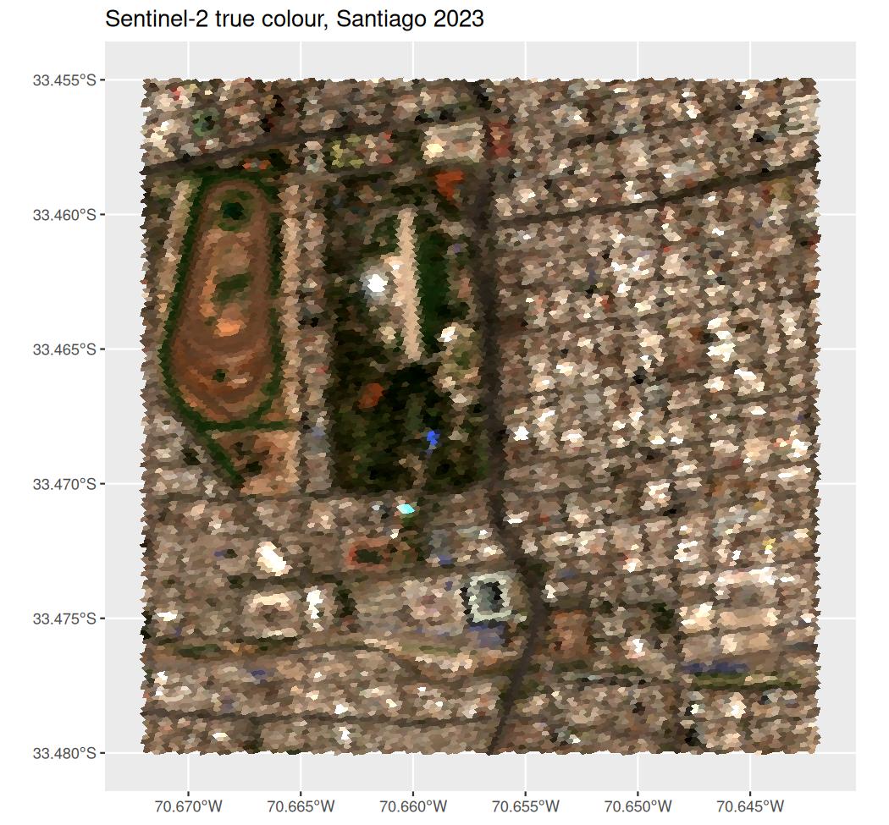
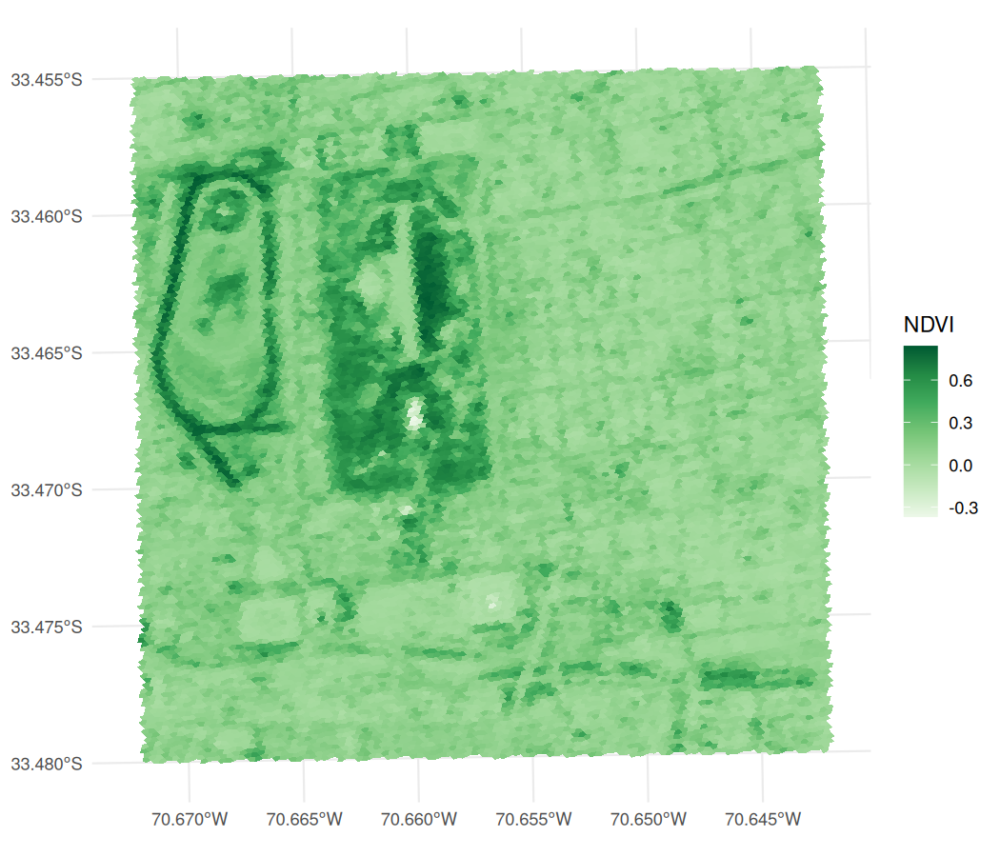
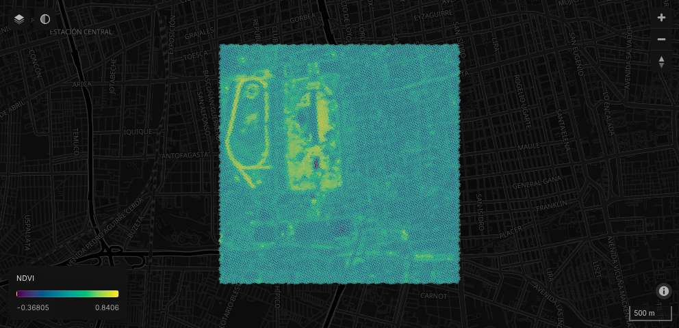

a5view visualises A5 cells in R. a5R creates, indexes and transforms cells; a5view draws them, as static plots through ggplot2 or as interactive maps in the browser. Both take a vector of a5_cells or a data frame with a cell column and draw the cells directly, with no conversion to polygons first.
| Task | Functions |
|---|---|
| Static plots |
geom_a5(): a ggplot2 layer that works with scales, geom_sf() layers and any coord_sf() projection |
| Interactive maps |
a5_view(): an htmlwidget built on deck.gl and MapLibre, for the viewer, R Markdown, Quarto and Shiny |
| Colour composites |
cells_rgb(), cells_pca_rgb(): map several bands or an embedding to RGB, in either of the above |
| Large datasets |
a5_build_pyramid(), a5_view_pyramid(): level-of-detail pyramids streamed to the browser |
Installation
# install.packages("pak")
pak::pak("belian-earth/a5view")a5view 0.3.0 draws A5 1.0 cell ids, as produced by a5R >= 0.9.9.9000. Ids written by earlier versions of a5R are valid 1.0 cells in the wrong place, so a5view cannot tell them apart and draws them where 1.0 puts them; convert them once with a5R::a5_migrate(). Use a5view 0.2.x for pre-1.0 ids.
Example data
The examples below use s2_santiago, which ships with the package: 15,626 resolution-18 cells (about 22 m across) of a cloud-free Sentinel-2 mosaic over Parque O’Higgins in Santiago, Chile, with the blue, green, red and near-infrared bands.
library(a5view)
head(s2_santiago)
#> cell B02 B03 B04 B08
#> 1 32b5c12040800000 1919 2165 2432 2445
#> 2 32b5c12041800000 1259 1575 1831 2254
#> 3 32b5c12042800000 2047 2414 2597 2807
#> 4 32b5c12043800000 989 1228 1441 2077
#> 5 32b5c12044800000 1305 1527 1663 2179
#> 6 32b5c12045800000 1121 1355 1569 2023Sentinel-2 mosaic by Earth Genome (CC-BY 4.0). Contains modified Copernicus Sentinel data 2023.
Static plots with ggplot2
geom_a5() takes the cells through the cell aesthetic. cells_rgb() maps the red, green and blue bands to a true-colour composite; its output is already colour, so no scale is needed.
library(ggplot2)
ggplot(s2_santiago, aes(cell = cell, fill = cells_rgb(B04, B03, B02, range = c(300, 2800)))) +
geom_a5() +
labs(title = "Sentinel-2 true colour, Santiago 2023")
Any fill scale works. Like geom_sf(), geom_a5() plots in longitude and latitude by default, and coord_sf() reprojects the cells, here NDVI (a vegetation index) in UTM zone 19S:
ggplot(s2_santiago, aes(cell = cell, fill = (B08 - B04) / (B08 + B04))) +
geom_a5() +
scale_fill_distiller(palette = "Greens", direction = 1, name = "NDVI") +
coord_sf(crs = 32719) +
theme_minimal()
Cells are drawn as polygons while they are large on the page and as a raster at the output resolution once they are smaller than a few pixels, so a plot of millions of cells costs about the same as one of thousands. render = "vector" or "raster" fixes the choice.
Interactive maps
a5_view() draws the same data on a web map. deck.gl and a5-js render the cells on the GPU from their ids, so the boundaries are never computed in R. fill accepts a column, an expression of columns or a colour helper, as aes() does.
s2_santiago$NDVI <- with(s2_santiago, (B08 - B04) / (B08 + B04))
a5_view(s2_santiago, fill = NDVI, opacity = 0.8, tooltip = c("B04", "B08"))
The map has:
- colour mapping through any
hcl.colors()palette, with an on-map legend; - basemaps from OpenFreeMap (dark, light and OSM, with no API key) and Esri satellite imagery, with labels drawn above the cells;
- a hover tooltip showing the cell id, fill value and any extra columns, and click to pin a cell;
- an opacity slider, zoom and compass control, and scale bar;
- cell borders, 3D extrusion (
elevation) and a globe projection (globe = TRUE).
Large datasets
By default a widget sends every cell to the browser, which suits small and medium datasets. For larger ones, aggregate builds a level-of-detail pyramid: coarser cells summarise their children ("mean" for scalar fields, "rep_child" to keep one representative child for colour composites), and the browser decodes only the levels and areas in view. a5_build_pyramid() writes the pyramid to a parquet file once, so it can be viewed again without rebuilding.
a5_view(cells, fill = value, aggregate = "mean")
a5_build_pyramid(cells, "cells.parquet", fill = value, aggregate = "mean")
a5_view_pyramid("cells.parquet")Inside Shiny the parquet file is served with HTTP range requests, so only the row groups in view are transferred.
Shiny
a5_viewOutput() and renderA5_view() place a map in an app, and a5_view_update() changes its cells and colours in place without resetting the view. The hovered and clicked cells arrive as input$<id>_hover and input$<id>_click.
Setting draw_polygon = TRUE adds a polygon tool to the toolbar. Clicks place vertices, a double-click closes the polygon, and the polygon arrives as WKT at input$<id>_polygon_draw. The widget does not highlight the cells inside it: resolve the WKT to cells on the server and send new fills with a5_view_update().
a5_viewOutput("map")
# server
output$map <- renderA5_view({
a5_view(my_cells, draw_polygon = TRUE)
})
observeEvent(input$map_polygon_draw, {
cells_in_poly <- a5R::a5_polygon_to_cells(
wk::wkt(input$map_polygon_draw),
resolution = 4L
) |>
a5R::a5_uncompact()
# ... use cells_in_poly, e.g. a5_view_update() with selection-driven fills.
})See inst/examples/polygon-select/app.R for a complete app combining click and polygon selection.